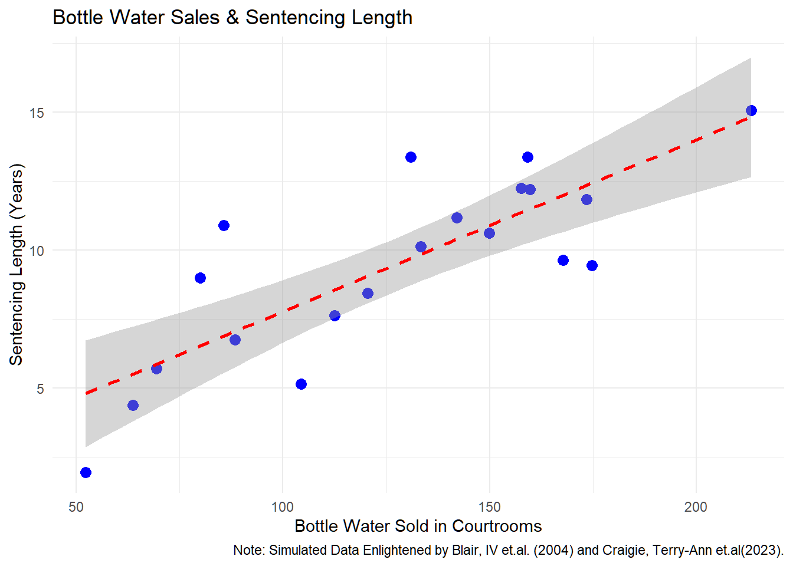

Please cite as:
Hlavac, Marek (2022). stargazer: Well-Formatted Regression and Summary Statistics Tables.
R package version 5.2.3. https://CRAN.R-project.org/package=stargazer
library(mlbench)
Spurious Relationship
First, let’s start with some simple tasks to refresh the basics of R & RStudio. 1.Check your working directory (type your code below and run it)
library(ggplot2)# Create the datasetset.seed(42) # For reproducibilitydata <-data.frame(Temperature =seq(60, 100, length.out =20), # Temperature (Z) as the true driverBottle_Water_Sales =seq(50, 200, length.out =20) +rnorm(20, 0, 10), # X: Water bottles soldSentencing_Length =seq(5, 15, length.out =20) +rnorm(20, 0, 2) # Y: Sentence length (years))# Plot the spurious relationship (ignoring temperature)ggplot(data, aes(x = Bottle_Water_Sales, y = Sentencing_Length)) +geom_point(color ="blue", size =3) +# Scatter pointsgeom_smooth(method ="lm", color ="red", linetype ="dashed") +# Fake trend linelabs(title ="Bottle Water Sales & Sentencing Length",x ="Bottle Water Sold in Courtrooms",y ="Sentencing Length (Years)",caption ="Note: Simulated Data Enlightened by Blair, IV et.al. (2004) and Craigie, Terry-Ann et.al(2023)." ) +theme_minimal()
`geom_smooth()` using formula = 'y ~ x'

Collider
set.seed(123)n <-500# Generate exercise levels (hours per week)exercise <-rnorm(n, mean =5, sd =2)# Generate blood pressure - Randomly generated, NO relationship with exerciseblood_pressure <-rnorm(n, mean =120, sd =5)# Obesity is influenced by both exercise and blood pressure (collider)obesity <-ifelse(exercise <5| blood_pressure >120, 1, 0)# Modify Blood Pressure to create group-specific effectsblood_pressure[obesity ==0] <- blood_pressure[obesity ==0] -2* exercise[obesity ==0] # Exercise LOWERS BP for non-obeseblood_pressure[obesity ==1] <- blood_pressure[obesity ==1] +2* exercise[obesity ==1] # Exercise RAISES BP for obese# Create dataframedata <-data.frame(exercise, blood_pressure, obesity)
Modeling:
# Overall regression (ignoring obesity)overall <-lm(blood_pressure ~ exercise, data = data)# Regression within subgroupobese <-lm(blood_pressure ~ exercise, data = data %>%filter(obesity ==1))non_obese <-lm(blood_pressure ~ exercise, data = data %>%filter(obesity ==0))# Controlling for obesitycontrol <-lm(blood_pressure ~ exercise + obesity, data = data)stargazer(overall, control,type ="text")
library(ggplot2)# Fit regression modelsoverall <-lm(blood_pressure ~ exercise, data = data) control <-lm(blood_pressure ~ exercise + obesity, data = data)# Create a new dataset for predictionsexercise_seq <-seq(min(data$exercise), max(data$exercise), length.out =100)pred_data <-data.frame(exercise = exercise_seq, obesity =0) # Default obesity = 0pred_data$overall_pred <-predict(overall, newdata = pred_data) # Predictions from model without obesitypred_data$control_pred <-predict(control, newdata = pred_data) # Predictions from model with obesity# Plot the observed dataggplot(data, aes(x = exercise, y = blood_pressure)) +# Scatter plot of actual datageom_point(alpha =0.5, color ="gray") +# Regression line for overall model (ignoring obesity)geom_line(data = pred_data, aes(x = exercise, y = overall_pred), color ="black", linetype ="dashed", size =1) +# Regression line for controlled model (including obesity)geom_line(data = pred_data, aes(x = exercise, y = control_pred), color ="red", size =1) +# Labels and formattinglabs(title ="Collider Bias: Exercise & Blood Pressure",subtitle ="Dashed Black Line = Overall Model, Red Line = Controlling for Obesity",x ="Exercise (Hours per Week)",y ="Blood Pressure (mmHg)" ) +theme_minimal()
Warning: Using `size` aesthetic for lines was deprecated in ggplot2 3.4.0.
ℹ Please use `linewidth` instead.